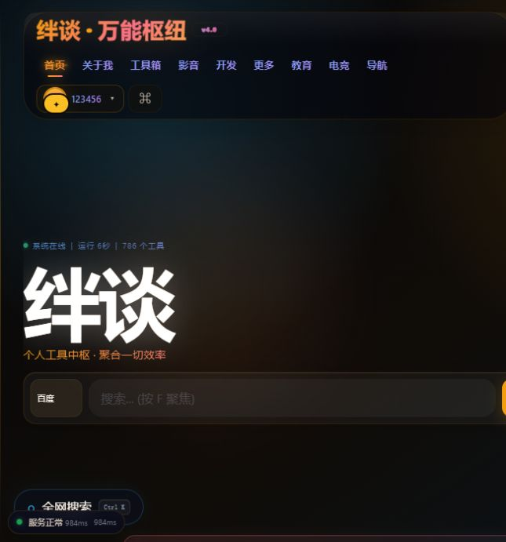
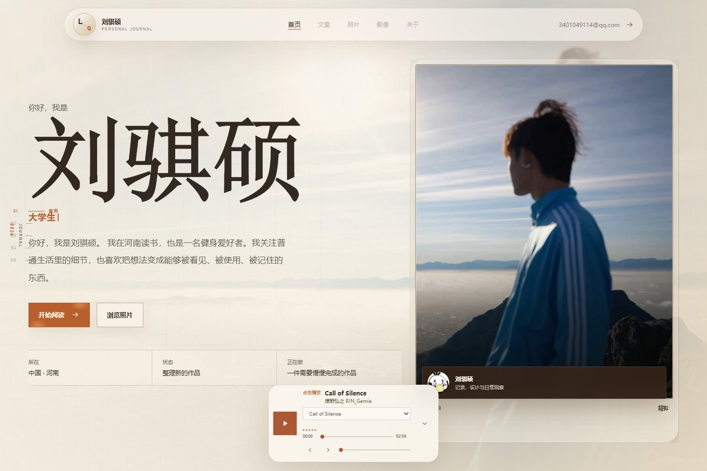

WEBSITE PRODUCTION / 2026
把网站做成
真正能用的作品
绊谈制作负责从结构、视觉、前端到上线的完整过程。不是只做一张好看的首页，而是把内容、交互、性能和长期维护一起做完。
4完整站点类型
100%移动端适配
24/7全球静态访问

从想法到上线，
一次把关键问题解决。
适合个人品牌、工具平台、版权项目、内容档案和服务型网站。每项服务都能单独制作，也能组合成完整项目。
网站策划与结构
先确定网站为什么要存在、给谁看、先看什么，再决定页面和功能。
- 信息架构
- 页面路线
- 内容优先级
品牌视觉与界面
为不同项目建立合适的视觉语言，不套模板，不牺牲信息清晰度。
- 视觉方向
- 响应式界面
- 动效与交互
前端开发与适配
覆盖手机、平板、电脑和课堂大屏，处理滚动、加载和不同浏览器差异。
- HTML/CSS/JS
- 性能优化
- 设备兼容
上线与全球访问
使用 GitHub 和 Cloudflare 完成自动部署、全球静态分发与基础安全配置。
- 自定义域名
- 自动部署
- 缓存更新
认证与版权系统
为作品接入官网编号、认证徽章、版权中心和公开查验入口。
- 官网编号
- 认证徽章
- 授权记录
长期维护与迭代
上线不是结束。持续更新内容、修复问题、改进体验并保留版本记录。
- 问题修复
- 内容更新
- 版本管理
一个品牌，
多条清晰的产品线。
制作方官网只代表网站制作与维护，不把工具平台、个人项目和版权系统混成一个身份。每项工作都有独立入口和明确责任。
网站策划、设计、开发、部署和长期维护。
面向用户的在线工具聚合平台，是制作方的独立项目，不是制作服务主页。
网站登记、认证编号、许可证、异议和公开查验系统。
个人文章、照片、影像和生活记录，版权归对应项目所有者。
能力不是一句“会做网站”
从内容到发布，关键环节都可以独立负责，也可以按现有项目缺口逐项接手。
HTML / CSSJavaScriptCloudflare PagesCloudflare WorkersGitHubD1 / KVResponsive UIPerformance
项目交付不只包含页面
每项交付都按照站点类型调整，但结构、维护和权利关系不会被省略。
设计交付
- 页面结构
- 视觉规范
- 响应式界面
- 交互状态
开发交付
- 前端页面
- 移动端适配
- 性能与兼容处理
- 内容接口或后台
上线交付
- 正式域名
- 自动部署
- 缓存版本
- 基础访问配置
文档交付
- 页面说明
- 维护入口
- 版本记录
- 问题处理路径
信任交付
- 制作署名
- 许可证关系
- 官网编号
- 认证徽章
长期支持
- 内容更新
- 兼容性修复
- 功能扩展
- 发布检查
常见问题
先把边界说清楚，再开始制作。
你是制作方还是版权方？
制作方负责建站和交付，版权归项目所有者。正式项目中会分别记录 copyright owner、production credit、许可证和官网编号，不混为一谈。
可以只优化现有网站吗？
可以。可单独处理视觉升级、移动端适配、滚动与加载问题、性能、部署、版权系统接入或内容后台。
能做后台和数据库吗？
可以。可使用 Cloudflare Pages Functions、Workers、D1、KV、R2 等组件实现内容管理、数据存储、接口和权限控制。
网站会完全属于谁？
网站内容、品牌和正式权利归对应项目所有者。制作方保留制作署名；若需要转让其他权利，应以单独书面约定为准。
制作流程
每一步都能看到结果，不把问题留到上线后才发现。
- 01需求诊断目标与现状
- 02内容结构页面与功能
- 03视觉方向风格与界面
- 04前端开发适配与交互
- 05测试上线部署与检查
- 06持续维护更新与迭代
想做一个属于自己的网站？
先说明用途、名称和希望呈现的内容，我会给出适合的站点结构和制作路线。